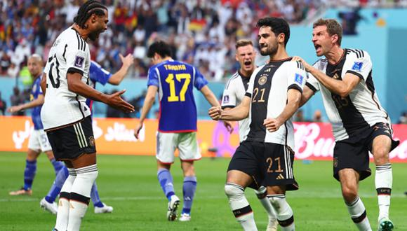

Japon vence a Alemania en una victoria historica
El conjunto nipon dio el batacazo ante Alemania en la primera fecha del grupo E compuesto por Japon, Alemania, España y Costa Rica. Los Alemanes comenzaron ganando el partido con autoridad y gran juego a los 32 minutos del primer tiempo en un tiro de penal ocacionado por el arquero japones Gonda y convertido por el mediocampista Gundogan de gran primer tiempo. Pero en el segundo tiempo el conjunto japones comenzo a hacerse cargo de las riendas del partido ante una Alemania que no lograba despertar e imponer su gran juego. A si a los 75 minutos del partido Doan igualaba el marcador despues de un rebote del arquero aleman Neuer, y luego a los pocos minutos ante la superioridad en el juego de los japoneses Takuma Asano marcaria el 2 a 1 definitivo.